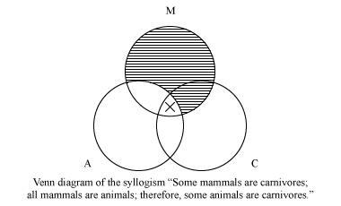

Aristotle
Aristotle
Among the great achievements to which Aristotle can lay claim is the first regular management of the principles of logic. No one before Aristotle, developed a system for the principles governing correct reasoning or tried to organize the formal and syntactic principles at play in such inference. Aristotle, in general, argues that a deduction is the sort of argument whose structure guarantees its validity, irrespective of the truth or falsity of its premises.
This naturally follows in following structure:
1 All As are Ms.
2 All Ms are Cs.
3 Hence, all As are Cs.
Accordingly, anything taking this form will be a deduction in Aristotle's sense. Let the As, Ms, and Cs be anything at all, and if indeed the As are Ms, and the Ms Cs, then of necessity the As will be Cs.
This particular deduction is perfect because it needs no proof, and maybe because it admits of no proof either: any proof would seem to rely ultimately upon the necessary accuracy of this sort of argument.
John Venn, a logician in the 19th through the 20th century expanded on Aristotle's logic in this way. When looking at his logic there are four variables that can be added. The first is the logic provided before that came to the conclusion that if all As are Ms, and all Ms are Cs, therefore all As are Cs. The other side of this can be no As are Ms. Some As are Ms and some As are not Ms. If any of these three would be the case the conclusion drawn before would be far harder to come to if only some of the As are Cs.
Without Aristotle's contribution to the study of logic, it may have taken hundreds of years for a systematic approach to be taken to it. After Aristotle, no one touched logic for hundreds of years. It is very relevent to the study of mathematics today.